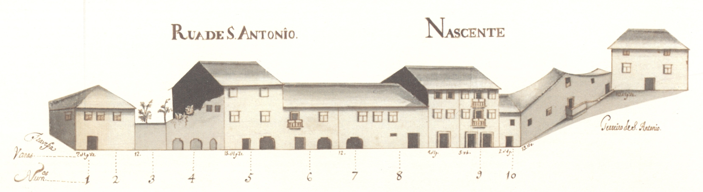

Rua de Sto. António - nascente

Rua de Sto. António - poente
19 |
Rua de Sto. António |
|  Rua de Sto. António - nascente |
Rua de Sto. António - poente |
Pequena rua, que ligava a rua das Travessas com o Terreiro de Santo António. De raiz romana, não sabemos qual teria sido a sua função na cidade medieval.
Em 1465 são transferidos para aqui os judeus e instalados no prédio mais interessante que hoje aqui resta, e um dos mais estimáveis de toda a cidade, passando a ser denominada de Judiaria Nova. Esta casa veio depois a pertencer ao cónego João de Meira Carrilho, que lhe pôs as suas armas.
No final de quatrocentos, com a obrigação que os judeus sofreram de abjurar a sua religião passou a ser chamada de Sto. António, nome que se mantém.
Das 3 casas medievais que se vêem no alçado Nascente nada resta hoje infelizmente (uma já estava em adiantada ruína). Do lado Poente conservam-se algumas casas, ainda. É curioso notar que as suas construções têm um tipo de acabamento e proteção de janelas bem mais cuidado que a rua que lhe era sequente, a das Chagas.
Esta artéria, que felizmente ainda hoje conserva o seu traçado original, tinha 7 casas do lado Nascente e 15 do Poente, sendo 6 e 11, respectivamente, prazos do Cabido.
| Número | Enfiteuta | Foro | Descrição |
| 1 e 2 | Francisco Soares de Novais, abade de S. Vicente do Bico | 290 reis e 2 galinhas | Encontram-se unidas, num só prazo, desde o ano de 1591. Possuem frontaria para a travessa que vem da Rua de D. Gualdim para esta rua. |
| 3 e 4 | José da Cunda e Sousa | 1420 e 4 galinhas | Encontram-se unidas, num só prazo, desde o ano de 1524. |
| 5 | Padre Miguel de Abreu | 170 reis e 6 galinhas | |
| 6 | Padre Miguel de Abreu | 90 reis e 2 galinhas | |
| 7 e 8 | Francisco Gonçalves Coudo, casado com Josefa Maria Madureira | 150 reis e 4 galinhas | Encontram-se unidas, num só prazo, desde o ano de 1592. |
| 9 | Felícia Teresa, viúva de Luís de Barros | 300 reis e 2 galinhas | |
| 10 | António Coelho, abade de S. Martinho de Alvito | 410 reis | Possui frontaria para o rossio ou terreiro de Sto. António, com o qual confronta do sul. |
| 11 | Os herdeiros de Miguel de Araújo Barreto, tenente | 350 reis e 2 galinhas | |
| 12 e 13 | Agostinho Marques do Couto, cónego | 1360 reis e 4 galinhas | Estas casas (denominadas «Casas Torres»), encontram-se unidas, num só prazo, desde o ano de 1697. Na casa n.º 12, onde foi colocada a imagem de Sto. António, (antes de 1502), funcionou a antiga sinagoga. |
| 14 | Agostinho Marques do Couto, cónego | 350 reis e 2 galinhas | Confronta, do norte, com casa foreira ao mosteiro de Bouro. |
| 15 | Padre Agostinho de Araújo Álvares | 240 reis e 2 galinhas | |
| 16 | Padre Agostinho de Araújo Álvares | 420 reis e 2 galinhas | |
| 17 | Os herdeiros de João Luís Moreira, boticário | 445 reis e 2 galinhas | |
| 18 | Os herdeiros de João Luís Moreira, boticário | 180 reis e 1 galinha | |
| 19 | Padre Manuel de Chaves | 430 reis e 2 galinhas | |
| 20 | António de Lima e Abreu | 220 reis e 2 galinhas | A casa n.º 22 confronta, do norte, com a travessa que vem da Rua de D. Gualdim. |
| 21 | António de Lima e Abreu | 520 reis e 2 galinhas | A casa n.º 22 confronta, do norte, com a travessa que vem da Rua de D. Gualdim. |
| 22 | António de Lima e Abreu | 440 reis e 2 galinhas | A casa n.º 22 confronta, do norte, com a travessa que vem da Rua de D. Gualdim. |